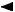
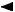

You can specify the setting of page size, media type, photo fix and so on to print the photos saved on the memory card or USB flash drive.
How to display the print settings confirmation screen varies with the print menu.
-
In DPOF print or Print all photos:
The following screen is displayed before printing.
The following screen is for DPOF print
-
In Select photo print or Slide show:
The following screen is displayed by pressing the right Function button on the photo selection screen.
You can specify the following setting items.
Use the 
 button to change the setting item and the 
button to change the setting item and the  button to change the setting on the LCD.
button to change the setting on the LCD.
 Note
Note-
Depending on the print menu, some setting items cannot be selected. This section describes the setting items in Select photo print.
The setting item which cannot be selected is displayed grayed out or not displayed.
-
Some settings cannot be specified in combination with the other setting item or the print menu. If the setting which cannot be specified in combination is selected, Error details is displayed on the LCD. In this case, press the left Function button to confirm the message, then change the setting.
-
The settings of the page size, media type, etc. are retained even if other print menu is selected or the machine is turned off.
-
Page size
Select the page size of the loaded paper.
-
Type (Media type)
Select the media type of the loaded paper.
-
Print qlty (Print quality)
Select print quality according to the photo.
-
Border (Bordered/Borderless print)
Select bordered or borderless print.
-
Photo fix
When Auto photo fix is selected, the scene or person's face of a shot photo is recognized and the most suitable correction for each photo is made automatically. It makes a darkened face by backlight brighter to print. It also analyzes a scene such as scenery, night scene, person, etc. and corrects each scene with the most suitable color, brightness, or contrasts automatically to print.
Note-
As a default, photos on the memory card/USB flash drive are printed with auto correction applied.
-
If No correction is selected, photos are printed without correction.
-
-
Red-EyeCorrection
Corrects red eyes in portraits caused by flash photography.
Depending on the type of the photo, red eyes may not be corrected or parts other than the eyes may be corrected.
-
Print date
Activates/deactivates to print the shooting date on a photo.
Note-
The shooting date is printed according to the settings of Date display format in Device user settings under Device settings.
-